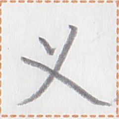
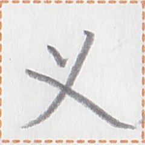

← Previous
Index
Next →
English: I've heard that in Gowner the summer weather is really hot.
Chinese: 我听说刀水夏天的天气真热。
Chinese (pinyin): Wǒ tīng shuō Dāoshuǐ xiàtiān de tiānqì zhēn rè.
Pekzep (latin transcription): pai2 lua1 can2 gau2 nua2 a xo1 kit kan1.
Pekzep (hanzi transcription): 我耳識刀水之夏極火。
Pekzep (linzklā): 


 

Analysis: